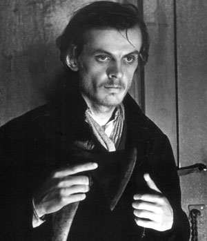

Преступление и наказание

…Раскольников открыл глаза и вскинулся опять навзничь, заломив руки за голову…
«Кто он? Кто этот вышедший из-под земли человек? Где был он и что видел? Он видел всё, это несомненно. Где ж он тогда стоял и откуда смотрел? Почему он только теперь выходит из-под полу? И как мог он видеть – разве это возможно?.. Гм… – продолжал Раскольников, холодея и вздрагивая, – а футляр, который нашел Николай за дверью: разве это тоже возможно? Улики? Стотысячную черточку просмотришь – вот и улика в пирамиду египетскую! Муха летала, она видела! Разве этак возможно?»
И он с омерзением почувствовал вдруг, как он ослабел, физически ослабел.
«Я это должен был знать, – думал он с горькою усмешкой, – и как смел я, зная себя, предчувствуя себя, брать топор и кровавиться! Я обязан был заранее знать… Э! да ведь я же заранее и знал!..» – прошептал он в отчаянии.
Порою он останавливался неподвижно перед какою-нибудь мыслию:
«Нет, те люди не так сделаны; настоящий властелин, кому всё разрешается, громит Тулон, делает резню в Париже, забывает армию в Египте, тратит полмиллиона людей в московском походе и отделывается каламбуром в Вильне; и ему же, по смерти, ставят кумиры, – а стало быть, и всё разрешается. Нет, на этаких людях, видно, не тело, а бронза!»
Ф. М. Достоевский.Внутренний монолог Раскольникова